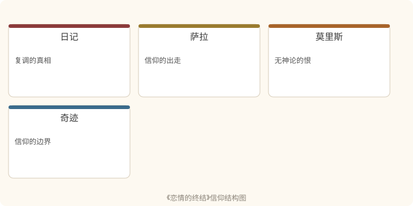

恋情的终结
一、基本信息
| 作者 | 格雷厄姆·格林 |
|---|---|
| 成书/出版 | 1951年（作者页 B283 口径：The End of the Affair (1951)） Graham Greene — Encyclopaedia Britannica（百科全书） |
| 国别/地区 | 英国 |
| 时代 | 现当代 · 20世纪 |
| 体裁 | 长篇小说 |
| 语言 | 英语 |

《恋情的终结》信仰结构图（主题·结构图）
二、创作背景
Britannica（B283）：'Many of his best-known works, including The Power and the Glory (1940) and The End of the Affair (1951), center on Roman Catholic themes'；'emphasize the presence of evil as a palpable force'（B283）。
'The End of the Affair (films 1955 and 1999) is narrated by an agnostic in love with a woman who forsakes him because of a religious conviction'（无神论者爱上因宗教信念离开他的女人——B283）。
三、内容脉络
莫里斯的嫉妒日记：萨拉的日记揭示'背叛'的真相——宗教的介入（通说待核）。
'恨'与'爱'的祈祷战（通说待核）。
四、主要人物表
| 人物 | 身份 | 说明 |
|---|---|---|
| 莫里斯·本德里克斯 | 作家 | 无神论叙述者（B283 语境） |
| 萨拉 | 恋人 | 皈依者（通说待核） |
五、主题与艺术特点
- 无神论者的嫉妒与信仰（B283）。
- '恶'的可感实在（B283：evil as a palpable force）。
- 日记的复调（通说待核）。
六、影响与评论
- Britannica：格林'one of the most widely read British novelists of the 20th century'（B283）。
Graham Greene — Encyclopaedia Britannica（百科全书） - Britannica：电影1955与1999（B283）。
Graham Greene — Encyclopaedia Britannica（百科全书）
七、阅读建议
难点
- 天主教语境。
- 日记体的双重视角。
- 《恋情的终结》（江苏凤凰文艺出版社/人民文学出版社版本，通说待核）。
- 英文原版。
先《权力与荣耀》后本作。
八、待核实
- 1951年出版（Heinemann说）核对。
- 莫里斯/萨拉人名核对。
- '恨的祈祷'结构待核。
本页主要来源
格雷厄姆·格林的其他收录作品：恋情的终结